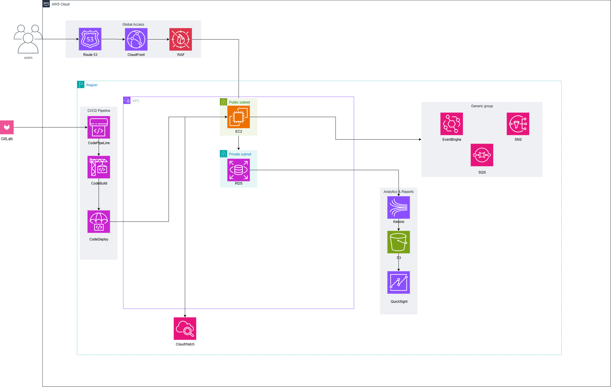

Bản đề xuất
AWS First Cloud AI Journey – Metropolitano Railways
Nhóm thực hiện: FPT HCM University
Khách hàng (Client): Metropolitano Railway Systems
Ngày tài liệu: 12/09/2025
MỤC LỤC
- BỐI CẢNH VÀ ĐỘNG LỰC
1.1 TÓM TẮT ĐIỀU HÀNH
1.2 TIÊU CHÍ THÀNH CÔNG CỦA DỰ ÁN
1.3 CÁC GIẢ ĐỊNH
- KIẾN TRÚC GIẢI PHÁP / SƠ ĐỒ KIẾN TRÚC
2.1 SƠ ĐỒ KIẾN TRÚC KỸ THUẬT
2.2 KẾ HOẠCH KỸ THUẬT
2.3 KẾ HOẠCH DỰ ÁN
2.4 CÂN NHẮC BẢO MẬT
- HOẠT ĐỘNG VÀ SẢN PHẨM BÀN GIAO
3.1 HOẠT ĐỘNG VÀ SẢN PHẨM BÀN GIAO
3.2 NGOÀI PHẠM VI
3.3 LỘ TRÌNH LÊN PRODUCTION
- DỰ KIẾN CHI PHÍ AWS THEO DỊCH VỤ
- NHÂN SỰ
- TÀI NGUYÊN & ƯỚC TÍNH CHI PHÍ
- XÁC NHẬN / NGHIỆM THU
1. BỐI CẢNH VÀ ĐỘNG LỰC
1.1 TÓM TẮT ĐIỀU HÀNH
Bối cảnh khách hàng:
Quá trình đô thị hóa nhanh làm tăng áp lực lên hệ thống giao thông công cộng. Metropolitano Railway Systems đang hiện đại hóa vận hành nhằm cải thiện độ tin cậy, trải nghiệm hành khách và hiệu quả khai thác. Các hệ thống on-premises hiện tại gặp khó khăn về khả năng mở rộng, tính sẵn sàng cao, và xử lý dữ liệu thời gian thực.
Mục tiêu kinh doanh & kỹ thuật:
- Đảm bảo tính sẵn sàng cao (high availability) và vận hành 24/7 cho các dịch vụ trọng yếu (bán vé, điều phối, giám sát).
- Mở rộng linh hoạt (elastic scalability) để đáp ứng tải cao điểm theo mùa/khung giờ.
- Cải thiện độ tin cậy (reliability) và khả năng khôi phục thảm họa (disaster recovery).
- Hỗ trợ xử lý dữ liệu thời gian thực cho giám sát giao dịch bán vé và thanh toán, bao gồm theo dõi trạng thái thanh toán và đối soát.
- Tăng cường bảo mật & tuân thủ (security & compliance) theo tiêu chuẩn lĩnh vực vận tải công.
- Giảm chi phí vận hành thông qua tự động hóa cloud-native.
- Đẩy nhanh chu kỳ đổi mới: bán vé mobile, bảo trì dự đoán (predictive maintenance).
Các use case (phạm vi POC):
- Digital ticketing & fare collection (web/app booking, QR/IC card integration).
- Train scheduling & dispatch management (use case mang tính bối cảnh; không phải trọng tâm chính của POC này).
- Real-time payment/transaction event analytics thông qua Amazon Kinesis (ví dụ: cập nhật trạng thái thanh toán, sự kiện settlement, phát hiện bất thường).
- BI dashboards cho quản trị thông qua Amazon QuickSight.
- Incident response & alerting bằng monitoring/logging tập trung.
Tóm tắt dịch vụ chuyên môn của nhóm dự án (Project Team):
- Thiết kế kiến trúc AWS an toàn – mở rộng – chịu lỗi dựa trên Amazon EC2 và managed services.
- Migration một phần workload từ on-premises lên AWS phục vụ POC.
- Triển khai pipeline sự kiện giao dịch bán vé/thanh toán thời gian thực bằng Amazon Kinesis, lưu trữ và tạo dataset phân tích trên Amazon S3.
- Triển khai analytics và dashboard bằng QuickSight.
- Thiết lập CI/CD bằng CodePipeline, CodeBuild, CodeDeploy.
- Knowledge transfer/training để đảm bảo vận hành cho đội kỹ thuật phía Client.
1.2 TIÊU CHÍ THÀNH CÔNG CỦA DỰ ÁN
Độ tin cậy & tính sẵn sàng dịch vụ
- Hệ thống đạt ≥ 99.9% uptime cho các dịch vụ trọng yếu trong phạm vi POC (ticketing, payment monitoring, analytics).
Khả năng mở rộng & hiệu năng
- Nền tảng auto-scale để đáp ứng peak traffic mà không suy giảm hiệu năng.
- Response time end-to-end cho booking và payment APIs < 300 ms trong bài test tải cao (mức mục tiêu).
Xử lý dữ liệu thời gian thực
- Sự kiện giao dịch bán vé và thanh toán được xử lý với độ trễ < 5 giây bằng Amazon Kinesis.
- Ingestion pipeline hỗ trợ tối thiểu 10,000 events/second và có khả năng auto-scale (mức mục tiêu).
Cung cấp phân tích & insight
- Dashboard QuickSight cung cấp dữ liệu chính xác, được refresh ≤ 5 phút sau khi dữ liệu đến S3.
CI/CD & vận hành
- Tất cả deployment thực hiện qua CI/CD tự động và có rollback.
Tối ưu chi phí
- Cơ chế tối ưu chi phí (Auto Scaling, RI/Savings Plans, lifecycle policies) hướng tới giảm ≥ 20% so với vận hành on-premises (mức mục tiêu).
- Cấu hình Cost Explorer và Billing Alarms để tránh vượt ngân sách.
1.3 CÁC GIẢ ĐỊNH
Điều kiện tiên quyết & phụ thuộc
- Client cung cấp kịp thời quyền truy cập môi trường, hệ thống và nhân sự liên quan.
- Client cung cấp credentials, API documentation, integration endpoints cho on-prem/third-party.
- Dữ liệu vận hành (ticketing, scheduling, payment transactions) sẵn sàng để migration/integration.
- Vendor bên thứ ba (payment gateways, fare systems, transit card systems) có API ổn định và tài liệu đầy đủ.
- AWS accounts/org/billing được thiết lập trước khi bắt đầu.
- Client chỉ định SMEs theo domain (operations, IT, ticketing, scheduling).
Ràng buộc kỹ thuật
- Một số legacy systems có thể vẫn ở on-prem → cần hybrid connectivity (VPN/Direct Connect).
- Một số ứng dụng chưa cloud-optimized → giới hạn mức độ modernization trong scope POC.
- Chất lượng dữ liệu legacy có thể ảnh hưởng kết quả analytics.
- Mạng vận hành và hệ thống ticketing/payment phải hỗ trợ kết nối cloud an toàn và ổn định.
- Hiệu năng real-time analytics phụ thuộc độ trễ và độ ổn định ingestion từ payment gateways và nguồn giao dịch ticketing.
Ràng buộc kinh doanh
- Timeline phụ thuộc phê duyệt nội bộ của Client/procurement.
- Mức sẵn sàng và thời gian của nhân sự Client ảnh hưởng tiến độ.
- Giới hạn ngân sách có thể thu hẹp scope.
- Một số yêu cầu compliance có thể giới hạn data residency/retention.
Rủi ro (tổng quan)
- Integration risk (legacy undocumented behaviors).
- Data migration risk (inconsistent/incomplete data).
- Operational risk (hybrid/on-prem failures).
- Security risk (misconfigured third-party endpoints).
- Timeline & dependency risk (vendor approvals/API throughput).
2. KIẾN TRÚC GIẢI PHÁP / SƠ ĐỒ KIẾN TRÚC
2.1 SƠ ĐỒ KIẾN TRÚC KỸ THUẬT
Hình 1. Sơ đồ kiến trúc kỹ thuật AWS – Metropolitano Railways (POC)

Hình 1 (Kết quả POC & tóm tắt kiến trúc):
POC cho phép giám sát và đối soát gần thời gian thực các giao dịch bán vé/thanh toán. Sự kiện trạng thái thanh toán được stream vào Amazon Kinesis và đẩy về Amazon S3 (data lake) phục vụ phân tích. Dashboard Amazon QuickSight cung cấp insight doanh thu (ngày/tháng) và làm nổi bật các giao dịch chưa thanh toán/chưa hoàn tất để theo dõi. Lưu lượng người dùng được định tuyến qua Route 53 → CloudFront → AWS WAF tới ứng dụng chạy trên Amazon EC2, trong khi dữ liệu giao dịch lưu trên Amazon RDS (private subnet). Amazon CloudWatch hỗ trợ giám sát và cảnh báo. Các luồng xử lý bất đồng bộ được tách rời bằng SNS/SQS (và EventBridge khi cần). Mã nguồn quản lý trên GitLab; CI/CD triển khai bằng CodePipeline/CodeBuild/CodeDeploy.
Ghi chú Production (khuyến nghị khi triển khai Production):
- Bật Multi-AZ, đặt workload trong private subnets phía sau ALB.
- Kiểm soát egress bằng NAT Gateway và/hoặc VPC Endpoints.
- Bắt buộc TLS (ACM), IAM least privilege, dùng Secrets Manager/SSM.
- Bật CloudTrail/Config, tăng cường logging (WAF/CloudFront logs).
- Dùng blue/green hoặc canary deployments + rollback.
2.2 KẾ HOẠCH KỸ THUẬT
Các hoạt động chính:
- Provision hạ tầng bằng IaC (CloudFormation/CDK/Terraform — tùy team chọn) để triển khai:
- Amazon EC2 (application workloads)
- Amazon RDS (database services)
- Amazon S3 (static content + data lake)
- Amazon Route 53 (DNS routing)
- Amazon CloudFront và AWS WAF (global access & security)
- Amazon Kinesis (real-time ingestion)
- Amazon SQS/SNS (asynchronous messaging)
- Amazon EventBridge (event-driven workflows)
- Amazon CloudWatch (logging, monitoring, alarms, dashboards)
- Amazon QuickSight (analytics/BI)
- POC không sử dụng AWS Lambda; các consumer streaming và xử lý bất đồng bộ/background được triển khai trên EC2 (hoặc container) và tích hợp qua SNS/SQS/EventBridge khi phù hợp.
- Tự động hóa build/release bằng CodePipeline, CodeBuild, CodeDeploy, hỗ trợ rolling hoặc blue/green và rollback.
Hạng mục thay đổi cần phê duyệt (change management):
- DNS production (Route 53), cập nhật CloudFront, rule WAF, RDS parameter, Security Group…
- Thực hiện theo quy trình Change Management/CAB của Client (nếu có) và lưu record.
Cách tiếp cận kiểm thử:
- Unit / Integration / Load / Failover tests cho các luồng trọng yếu:
- Ticketing workflows, payment integrations,
- Real-time ingestion, analytics refresh,
- Monitoring/alerting.
- Test scenarios & acceptance criteria: ghi ở Appendix (nếu có).
2.3 KẾ HOẠCH DỰ ÁN
Sự tham gia của stakeholder (Client):
- Sprint reviews (demo/feedback) và retrospectives,
- UAT & sign-off,
- Technical design workshops.
Phân công trách nhiệm (high-level):
- Cloud Architect: solution design, security, scalability & HA patterns.
- DevOps Engineer: CI/CD, IaC, automated deployments.
- Application Engineer: refactor/integration.
- Data Engineer: Kinesis pipelines, SQS/SNS integration, data modeling.
- BI Engineer: QuickSight dashboards & dataset automation.
- Client IT Lead: access provisioning, governance alignment.
- Client Operations: validation, UAT.
- Client Security Officer: compliance & security controls review.
Nhịp giao tiếp (communication cadence):
- Daily: standup (Project Team).
- Weekly: status update to Client stakeholders.
- Bi-weekly: sprint review + sprint planning.
- Monthly: steering committee.
- Ad-hoc: incident response, change approvals, deep-dive design.
Chuyển giao kiến thức (knowledge transfer):
- Overview kiến trúc AWS
- Quản trị CI/CD
- Monitoring & incident response (CloudWatch)
- Vận hành data pipeline (Kinesis → S3 → QuickSight)
- Lifecycle hạ tầng & IaC
- IAM & security operations
2.4 CÂN NHẮC BẢO MẬT
Bảo mật truy cập (Access security)
- IAM least privilege, RBAC theo role, policy theo best practices.
- Bật MFA cho account đặc quyền.
- CI/CD access dùng IAM roles scoped permissions.
- DNS/WAF/CloudFront changes theo quy trình phê duyệt.
Bảo mật hạ tầng (Infrastructure security)
- (Production target) EC2 trong private subnet; public access qua ALB/CloudFront.
- WAF bảo vệ endpoints, SG/NACL enforce boundaries.
- RDS Multi-AZ, encrypted storage, automated backups.
- EventBridge có thể dùng cho security-trigger automation (vi phạm config, alert…) khi phù hợp.
Bảo mật dữ liệu (Data security)
- Encrypt at rest: S3/RDS/Kinesis/SQS bằng AWS KMS CMKs.
- Encrypt in transit: TLS 1.2+.
- S3 lifecycle + versioning theo retention/compliance.
- Data lake theo layer raw/processed/curated (nếu có trong scope).
Phát hiện & giám sát (Detection & monitoring)
- Bật CloudTrail + Config cho auditing/compliance.
- CloudWatch logs/metrics/alarms/dashboards.
- WAF logs + CloudFront access logs về S3 phục vụ security analytics.
Quản lý sự cố (Incident management)
- Playbooks cho system failure/security breach/data exposure/pipeline errors.
- SNS/EventBridge gửi alert đúng nhóm on-call.
- DR procedures cho EC2/RDS workloads.
- Backup snapshots theo retention policy của Client.
3. HOẠT ĐỘNG VÀ SẢN PHẨM BÀN GIAO
3.1 HOẠT ĐỘNG VÀ SẢN PHẨM BÀN GIAO
Căn cứ timeline: Thời gian thực tập 08/09/2025 – 22/11/2025 (~11 tuần)
| Giai đoạn |
Timeline |
Hoạt động |
Sản phẩm bàn giao / Cột mốc |
Tổng man-day |
| Assessment |
Tuần 1–2 (08/09–21/09) |
Workshop yêu cầu (business/technical/security); phân tích hiện trạng; xác định điểm tích hợp (payments, ticketing, analytics); kiểm tra readiness môi trường |
Assessment Report; Architecture Blueprint v1; Backlog & Sprint Plan |
TBD |
| Setup base infrastructure |
Tuần 3–4 (22/09–05/10) |
VPC, subnets, routing, SGs; IAM baseline; S3 data lake foundation; CloudFront + WAF + Route53; RDS setup; CloudWatch |
Infrastructure Provisioned; IaC templates delivered; Networking & Security Baseline |
TBD |
| Setup component 1 |
Tuần 5–6 (06/10–19/10) |
EC2 Auto Scaling setup; deploy application backend; cấu hình CI/CD (CodePipeline/CodeBuild/CodeDeploy); observability dashboards |
Application Deployed; CI/CD Pipelines Operational; Monitoring Dashboard |
TBD |
| Setup component 2 |
Tuần 7–8 (20/10–02/11) |
Kinesis streaming pipelines; SQS/SNS messaging; ETL to S3 Data Lake; QuickSight dashboards; EventBridge workflows |
Data Pipeline Operational; Event-driven Architecture; Revenue dashboards (daily/monthly); Unpaid/incomplete payments report (with alert thresholds) |
TBD |
| Testing & Go-live (POC) |
Tuần 9–10 (03/11–16/11) |
Unit/Integration/Load testing; go-live readiness review; (POC) DNS cutover; monitoring & rollback plans |
UAT Sign-off; Go-live Checklist; POC Launch |
TBD |
| Handover |
Tuần 11 (17/11–22/11) |
Hoàn thiện tài liệu; training vận hành; knowledge transfer; chuyển sang BAU |
Runbooks & SOPs; Admin Training Completion; Final Acceptance |
TBD |
Cách tính man-day (gợi ý):
- Man-day = số người tham gia × số ngày công thực tế dành cho giai đoạn đó.
- Ví dụ: 5 người làm 3 ngày cho “Assessment” → 5 × 3 = 15 man-days.
- Nếu theo giờ: 1 man-day ≈ 8 giờ làm việc (quy ước phổ biến).
- Ví dụ: tổng 120 giờ → 120 / 8 = 15 man-days.
3.2 NGOÀI PHẠM VI
- Phát triển tính năng mới hoặc chỉnh sửa lớn ngoài Scope of Work.
- Nâng cấp hạ tầng on-prem, redesign network, hoặc mua sắm phần cứng.
- Performance tuning cho hệ thống vendor bên thứ ba.
- Phát triển mobile app hoặc UI/UX redesign ngoài phạm vi.
- Machine Learning model development ngoài QuickSight & basic SageMaker patterns.
- Pen-test/third-party security audits (nếu không ký thêm).
- Vận hành 24/7 sau go-live (nếu không ký thêm).
- Hỗ trợ legacy networks hoặc component không cloud compatible.
- Migration các data sources không nằm trong assessment ban đầu.
- AWS Lambda–based serverless compute (event consumers/functions) không nằm trong scope POC này.
3.3 LỘ TRÌNH LÊN PRODUCTION
POC sẽ demo các use cases đã nêu tại mục 1.1 và 2.2, nhưng chưa bao gồm đầy đủ production-grade capabilities.
Các điểm cần bổ sung trước khi production:
- Full resilience design (multi-AZ, failover, scaling policies).
- Observability coverage (metrics, tracing, WAF logs, dashboards).
- Hardened security baselines (IAM advanced controls, WAF tuning, encryption policies).
- Comprehensive testing (integration/performance/DR simulation).
- CI/CD hardening + automated rollback.
- Production-approved DNS/WAF/network change processes.
- Enhanced error handling & exception flows.
4. DỰ KIẾN CHI PHÍ AWS THEO DỊCH VỤ
Các yếu tố cần cân nhắc (high-level):
- EC2: On-Demand + RI/Savings Plans (production).
- RDS: Multi-AZ + automated backups.
- CloudFront + WAF: request filtering + edge charges.
- S3: tiering (Standard/Intelligent-Tiering) + lifecycle.
- CloudWatch: logs/metrics storage.
- Kinesis: ingest & processing units.
- Data transfer giữa các components.
- QuickSight: Author/Reader licenses.
- SQS/SNS/EventBridge: theo throughput.
- Route 53: DNS queries + health checks.
Giả định (cần số liệu thực để tính chi phí chính xác):
- Daily ingestion volume: X GB/day via Kinesis (payment/ticketing events).
- EC2 sizing theo user load ticketing/payment workloads.
- S3 retention: 12 months (baseline).
- Moderate WAF rules usage.
- QuickSight: 1 Author + X Readers.
5. NHÂN SỰ
Tải Proposal Template